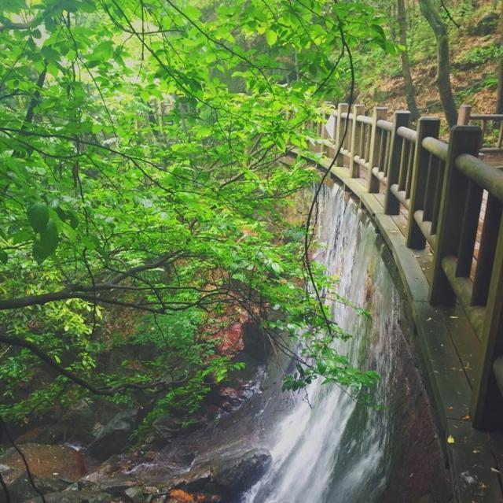
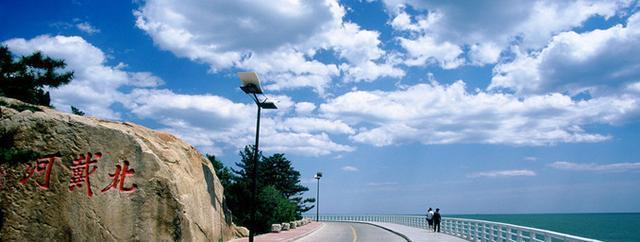
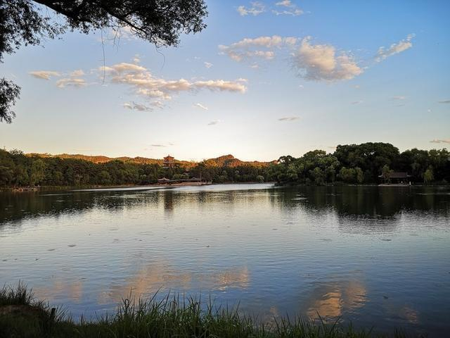
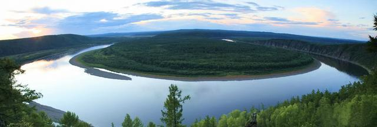
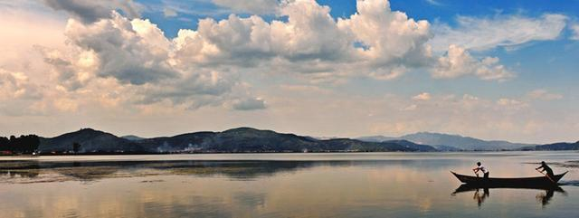
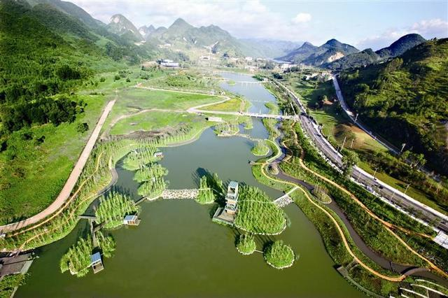
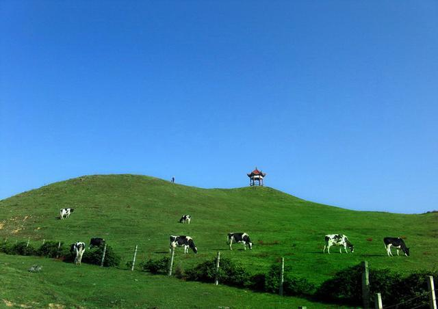

全国最美的8个避暑圣地
炎热夏天，就是你的时刻

莫干山，是中国四大避暑胜地之一，是泻压，静心，避暑清凉的好地方，素有“清凉世界”之美誉。有全球第一个Discovery探索极限公园，可以玩热气球、探索徒步及野外生存技能等，比较适合喜欢冒险的个体游客，当然团建是最合适的。义远有机农场，它能够满足你关于农场的所有美好幻想，吃货们可一定不能错过这里的有机餐厅，它可是《十二道锋味》中谢霆锋最后一道菜的选址地。

北戴河是名副其实的避暑胜地，夏无酷暑、冬无严寒，暑期平均温度最高24.5℃，是北方有名的避暑圣地。北戴河是夏季最适合看海的地方，气候适宜是避暑胜地，这里的沙滩沙质细软，不足的是海水感觉不够清澈干净。

承德是一座充满生机与活力的城市，是著名的避暑胜地，空气清新，名气很大。皇家园林，狩猎场，承德的大气和美丽让人大开眼界。承德以坝上草原著名，7月到8月间是去坝上高原的最佳时刻，此时坝上遍地野花，天气凉爽，晨雾弥漫。承德市的避暑山庄，是中国清朝皇帝修建的一座夏宫，清帝每年都有近半年时间在此休闲避暑，山庄内正常温度比山庄外要低3~5℃。

漠河素有“中国的北极村”之称。夏季只有半个月左右，最高温度38℃，夜里10℃左右，在全国凉爽城市排名中，排第一应该没人反对。这是中国唯一能欣赏那光耀天地、奇异瑰丽的“北极光”的地方。

抚仙湖，因湖水清澈见底、晶莹剔透，被古人称为"琉璃万顷"。是中国最大的深水型淡水湖泊，珠江源头第一大湖，是极佳的避暑胜地。这里的水质极佳，湖水清澈见底。抚仙湖景区主要的旅游景点有禄充村、界鱼石、明星景区、孤山岛等。

六盘水位于贵州西部，誉为“中国凉都”。实乃名副其实的天然“空调房”。六盘水风光秀美，境内有玉舍森林公园、明湖湿地公园、乌蒙山地质公园、乌蒙大草原、娘娘山湿地公园、野玉海、金盆天生桥等多处美景地，行走这里，白天能拥抱蓝天和白云，夜晚能仰望月亮和星星。即便是酷夏最闷热的日子，这里也能够让游客坐下来、住下来、静下来，全身心的感受清爽舒适的自然之美。
辽宁夏天最凉爽的地方非丹东莫属了，当其他地方火辣辣的时候，丹东依然能感觉到凉爽，夏无酷暑、冬无严寒，夏季往年平均温度15℃~24℃，是辽宁避暑旅游的好地方。最适合人类居住的城市之一，获选为“中国十大养老胜地”之一。七八月，与朝鲜仅一江之隔的丹东绿江村，宛如世外桃源。除了绿江村，小韭菜沟、砬子沟、天桥沟、花脖山，都是夏日的避暑仙境

采“茶”东篱下，悠然见“南山”。南山大草原位于湘西南边陲的城步苗族自治县境内，俗称南山牧场或南山大草原，是湖南省最佳的避暑圣地除了南山风景外，还有苗文石刻、吊龙表演、蓝氏宗祠和苗寨等地方值得游玩。去南山牧场的山路弯道很多，开车一定要小心。住宿的话一定要提前定好酒店，因为每天基本上都是满房，到了牧场你不用担心没吃的，当地牛羊肉非常的好吃，紧实！酸奶也超好喝。
首页
地点游
成都
绵阳
云南
主题游
浪漫基地
避暑圣地
春景
夏景
秋景
冬景
夜景
留言板